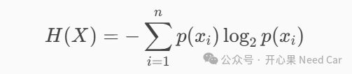

开心果 Need Car · 2025-08-25T06:20:00+08:00 · 微信原文
1、密码不能作为密钥使用的原因
密码强度用比特（bit）表示，是一个衡量密码安全性的指标。它反映了密码空间的大小，也就是密码可能的组合数量。也可以理解为：猜中密码所需的最小信息量（以二进制bit为单位）。
举个例子：一个3位数字PIN（每位使用0~9表示），总组合数是：10^3 = 1000种组合。如果用二进制表示1000种组合，至少需要log2(1000)≈9.97 bit。
密码强度越高，攻击者需要尝试的组合越多，破解难度越大。强度低的密码容易被暴力破解或字典攻击。在安全设计中，密码强度比密码长度更关键，因为长度不一定代表组合多。
假设：一个由62个字符（大小写字母 + 数字）组成的密码字符集，要达到AES-128的强度（128 bits），至少需要使用约22个字符，因为 log62(2^128)≈22。如果这些字符用UTF-8编码，则22*8=176 bits，每字符8 bits。176bit要转换成128bit的密钥使用，还需要进行转换或者截断处理。
2、什么是“熵”？
在信息论中，熵（Entropy）是衡量信息不确定性或随机性的指标。熵越高，表示数据越不可预测，也就越“随机”。
一个字节（byte）由8个bits组成。如果每个比特都是完全随机的，那么一个字节的最大熵就是8bits。这意味着每个可能的值（0 到 255）出现的概率是完全均等的。
（一）7.5 bits熵是什么水平？
7.5 bits 或更高表示数据非常接近完全随机。这意味着，虽然不是每个字节都完全均匀分布，但整体上已经足够“不可预测”，可以用于安全性要求高的场景，比如：密码学、加密密钥生成等。
举例：如果用一个硬币抛8次，每次都是公平的（正反面概率各50%），那么得到的8位二进制数的熵就是8 bits。如果硬币有偏，比如正面概率是90%，那么熵就会下降，因为可以“猜”出结果，数据就不那么随机了。
（二）如何理解“at least 7.5 bits per character”
标准ASCII使用7 bits表示一个字符（扩展ASCII使用8 bits表示一个字符）。UTF-8通常使用8 bits或更多表示一个字符。在密码学中，如果一个密码或密钥的平均比特数太低，可能意味着它容易被猜测或破解。
如果一个密码、密钥或数据字段的平均比特数低于7.5，可能被认为不够复杂或安全。要求 “at least 7.5 bits per character” 是为了确保数据具有足够的随机性和强度，从而抵抗暴力破解或字典攻击。
（三）TRNG产生的字节熵是8bit吗
理论上真随机数生成器（TRNG, True Random Number Generator）产生的每个字节的熵可以被视为 8 bits，但这有一些前提条件：如果TRNG的输出是完全不可预测的，并且每个字节（8 bits）中的每一位都是独立且均匀分布的。那么：
每个字节的熵就是8bits；
该字节可以表示256种可能值，每种值的概率是1/256；
没有任何偏差、重复模式或可预测性。
在现实中，TRNG 的输出可能受到以下因素影响：
硬件噪声源的质量：如热噪声、时钟抖动等；
采样机制：是否有足够的去偏处理（如使用熵提取器）；
统计测试结果：如NIST SP 800-90B中的熵评估方法。
因此，实际每字节的熵可能略低于8 bits，尤其在未经充分处理的原始输出中。
信息熵公式（Shannon Entropy）：

其中：
H(X)表示随机变量X的熵（单位是bits）
p(xi)表示第i个符号（或字节）出现的概率
n表示所有可能符号的数量（对于一个字节来说是256）
举个例子：假设有一个数据流，其中只包含4个不同的字符：A、B、C、D，它们的出现概率分别是：A: 0.25、B: 0.25、C: 0.25、D: 0.25。那么熵就是：
H=−(0.25log2(0.25)+0.25log2(0.25)+0.25log2(0.25)+0.25log2(0.25))=−4×0.25×(−2)=2bits
这表示每个字符平均携带2 bits的信息。
使用 ENT 工具 对熵源（entropy source）进行测试时的合格标准。ENT 是一个用于评估随机数据质量的工具，常用于测试伪随机数生成器或硬件熵源的输出。
https://www.fourmilab.ch/random/
往期精彩回顾